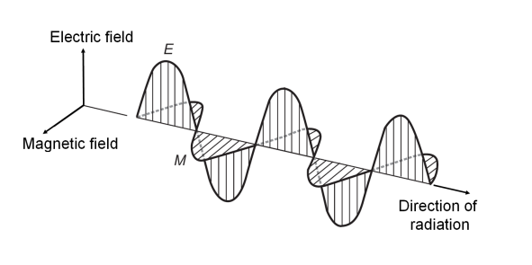
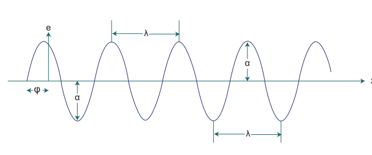
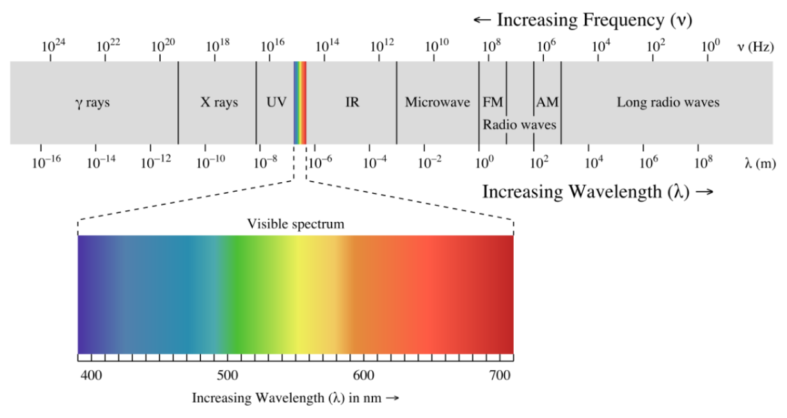
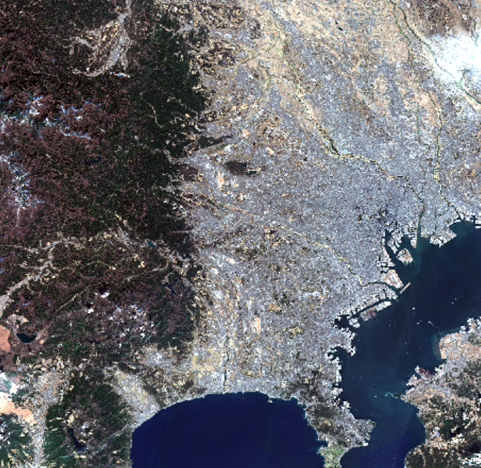
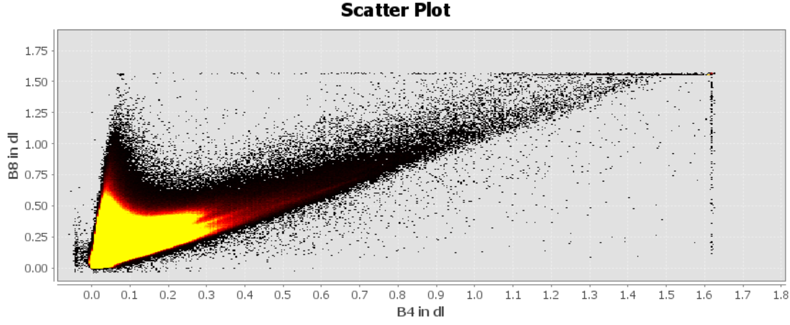
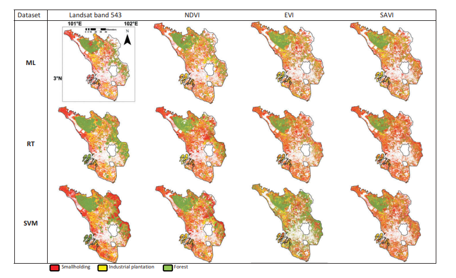
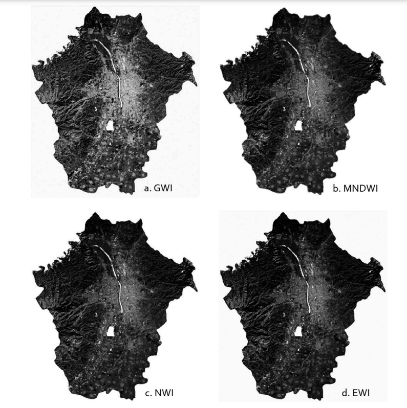

Week 1
Summary
For the first week we covered the following topics in the introductory lecture and practical:
- Types of Sensors
- active
- passive
- Electromagnetic Waves
- Interaction with the Earth’s surface
- Interaction with the atmosphere
- Different dimensions of resolution
- Spatial Resolution
- Spectral Resolution
- Radiometric Resolution
- Temporal Resolution
Below I try to provide a comprehensive summary of the content we covered, based on works of Brady (2021), Jensen (1996), and Tempfli et al. (2009).
The American Society for Photogrametry and Remote Sensing (ASPRS) has defined remote sensing as “the measurement or acquisition of information of some property of an object or phenomenon, by a recording device that is not in physical or intimate contact with the object or phenomenon under study” (Colwell 1983). To understand how remote sensing works, it is crucial for one to learn about electromagnetic radiation. Electromagnetic radiation is a kind of kinetic energy that is produced with the movement of electrically charged particles through space. Electromagnetic radiation consists of two components, an electric field and magnetic field, and it moves back and forth in and changes between the fields in a wave-like fashion.

The waves have differing three main different properties of waves
Wavelength: “the distance energy travels from a moment of maximum electrical energy until reaching the maximum again”
Amplitude: “the peak value of the wave”
Frequency: “the number of cycles of the wave that occur in one second”

The product of the wavelength and frequency is constant, equalling to the speed of light. Electromagnetic spectrum refers to the range of wavelength and frequencies that produces different colours of visible light and non-visible light.

In remote sensing, data may be collected with passive sensors that collect the electromagnetic radiation sourced from the Sun or other objects on the Earth and then reflected or emitted. It could also be collected using active sensors, such as RADAR and LiDAR, which produce the electromagnetic radiation and detects the reflection. There are a number of dimensions of the data to be considered in this collection process. One of these dimensions is regarding the spectral information and resolution. It is common for sources of remote sensing data to produce multi-band images, which means that the images are composed of multiple bands each comprised of a range of wavelengths on the electromagnetic spectrum. The relationship between the amount of electromagnetic radiation reflected in each of the bands and the biological, chemical, and physical attributes are often modelled. Bands are selected based on their appropriateness for the getting information about these attributes, regarding the maximisation of the background and variable of interest. Other dimensions to be considered are spatial resolution and the temporal resolution. The subject areas where remote sensing data is applied may differ depending on the combination of the values.
Sample of Practical Output
Sentinel Data Area of Interest: Yokohama, Kanagawa Japan


- Band 4: red (vegetation absorbs)
- Band 8: Near-infrared (NIR, that vegetation strongly reflects)
- high values of NIR and low values of red → dense vegetation
- low values of both red and NIR → wet bare soil.
Application
Here I will introduce two studies that I have found about the usage of different bands. The first study by Oon et al. (2019) is about the classification of given the issue of the conversion of tropical swamp forests into oil palm agriculture land, and how remote sensing data may be use for the identification of these areas, including whether they are large scale plantations operated by commercial firms, or smaller farms run by individual farmers. The region of interest is the state of Selangor on the west coast of Peninsular Malaysia, and level 2 imagery from Landsat-8 for the four dates of 24 March 2014, 30 March 2015, 29 March 2016 and 17 April 2017 was tests. It calculates three types of vegetation indices: the normalized difference vegetation index (NDVI), enhanced vegetation index (EVI) and soil adjusted vegetation index (SAVI). NDVI and SAVI is calculated with bands 4 (red band) and 5 (near-infrared (NIR) band), and EVI is calculated with bands 3 (blue band), 4 and 5. These indices are used to classify land usage for three categories with different methods: the supervised maximum likelihood (ML), random tree (RT) and support vector machine (SVM) classifier.

The second study by Yang and Du (2017) is regarding the extraction of water bodies for the monitoring of water resources by devising an enhanced water index. The development of EHI is based on three measures. This includes the first two components of principle components analysis conducted on the six multispectral bands in 30m pixel size from the Landsat 5 Thematic Mapper imagery for 23 September 2011. The third measure is the modified Normalized difference water index (NDWI) which is calculated with TM Band 2 which corresponds to the green band, and TM Band 5 which corresponds to the mid-infrared band (MIR). The accuracy of EHI is tested in comparison to other indices, with the results demonstrating the appropriateness of EHI for extracting water bodies in areas of mixed land usage.

The two studies demonstrate how studies do not only consider the direct usage of the remote sensing data from different bands at various combinations of spatial and temporal resolutions but how the different bands are combined together for the calculation of indices to develop or classification for an enhanced understanding.
Reflection
It was interesting how the values of different bands are combined to develop different types of indices and how these are developed on the base on the raw data that has been collected by the sensors. Moreover, these indices are not just done with their calculation, but seem to used for further analysis of the data. The range of things we can do with remote sensing data is much wider than I have expected. The usage of the SNAP application and raster data in Rstudio is something I am not familiar with and would like to learn more about. However, in the lecture it was mentioned that there are limitations in conducting analysis with R, so I look forward to learn about new platforms as well.